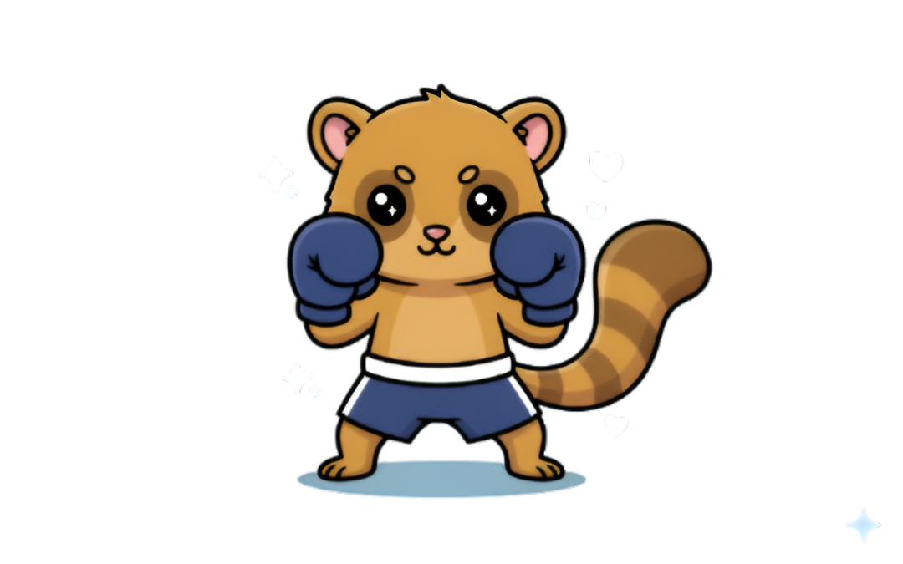
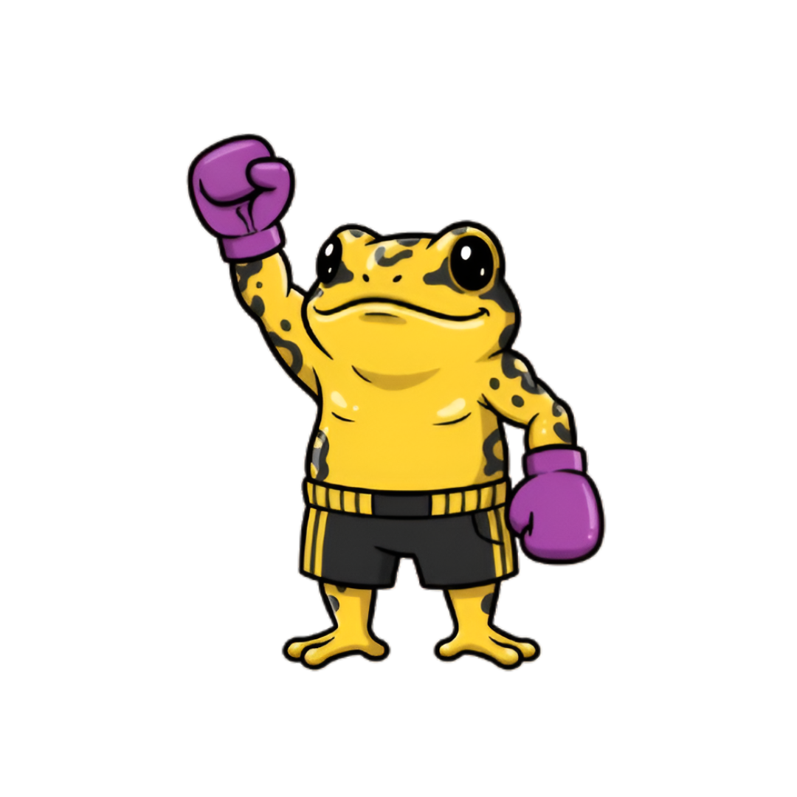
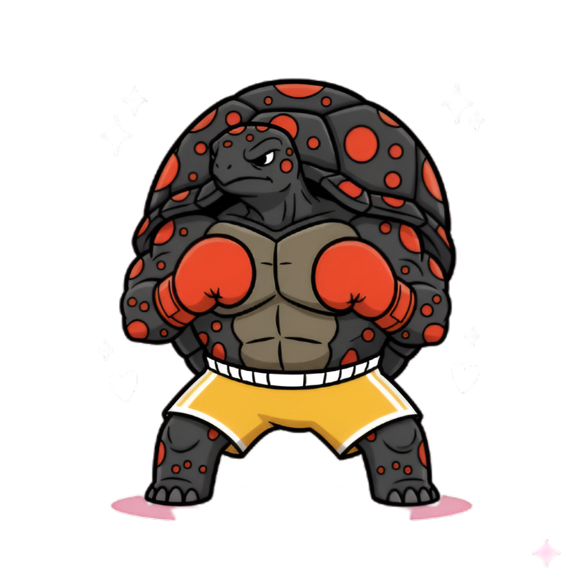
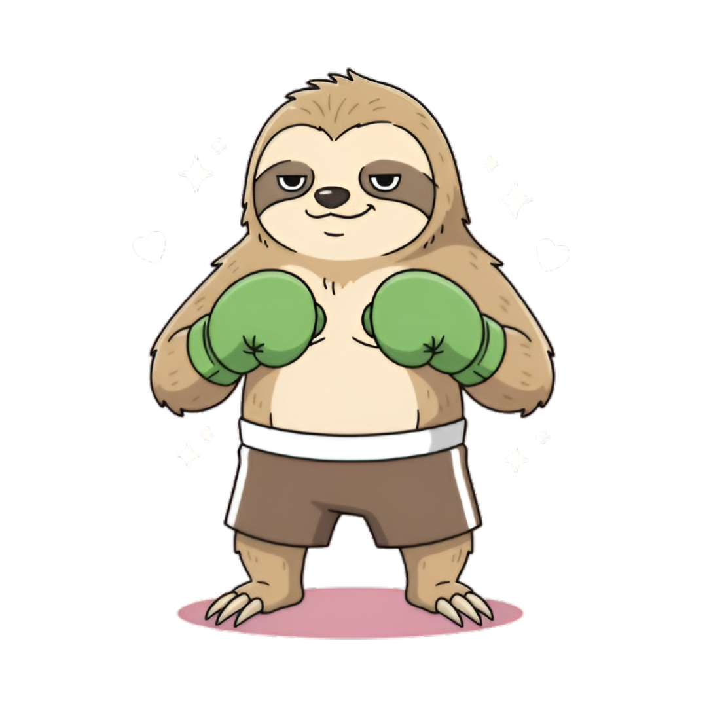
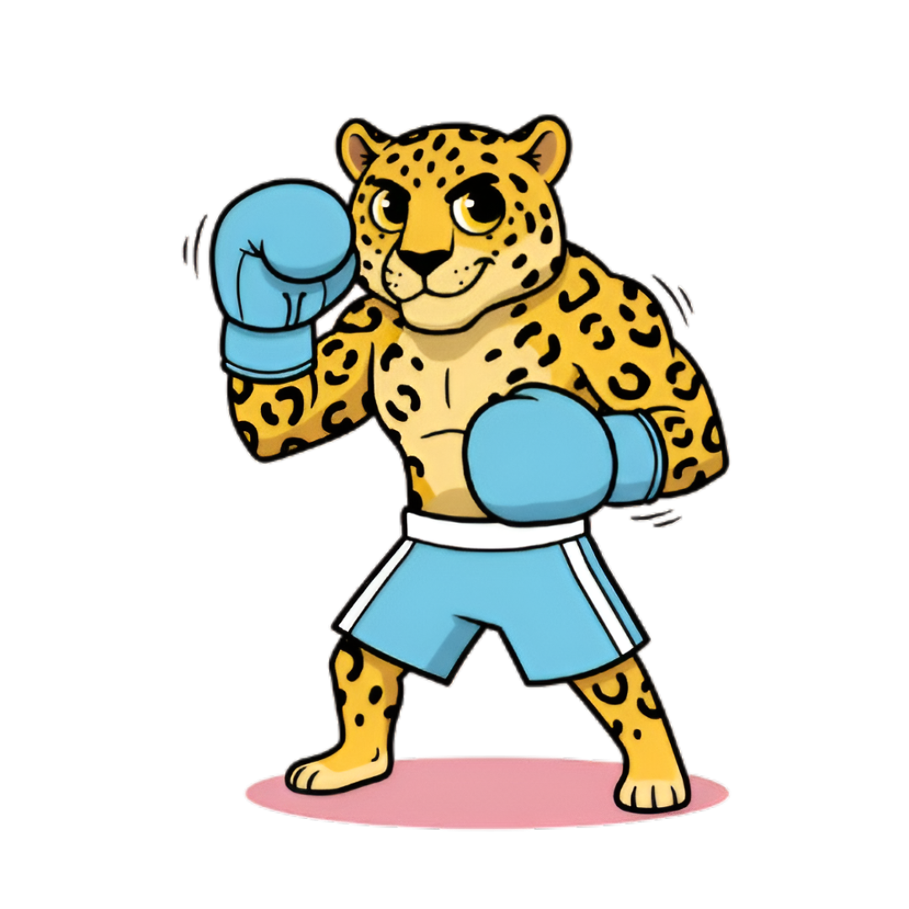
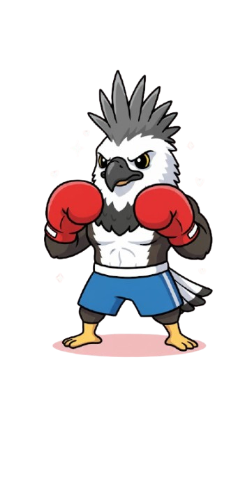

Conoce a tus entrenadores
Cada entrenador está inspirado en un animal emblemático de Panamá. Toca una tarjeta para aprender sobre su hábitat, características y más.
⌄
Oli
Olingo de Chiriquí
Nocturno
Árboles
Omnívoro

Hábitat
Bosques nubosos y montanos del oeste de Panamá, especialmente en Chiriquí, donde pasa la vida entre lianas y epífitas. Prefiere áreas con abundantes flores y frutos, y evita los claros expuestos.
Alimentación
Principalmente frutas y néctar, complementados con insectos y pequeñas presas. Esta dieta variada le permite ajustarse a los cambios estacionales del bosque.
Características
Cuerpo ágil con cola parcialmente prensil, orejas redondeadas y pelaje denso que lo protege de la humedad. Sus grandes ojos facilitan la visión nocturna.
Comportamiento
Generalmente solitario o en pequeños grupos familiares. Se comunica con chillidos suaves y marcas olfativas, y es más activo en las horas nocturnas.
⌄
Goldie
Rana dorada
Día
Arroyos
Insectívora

Hábitat
Quebradas y bosques húmedos del oeste y centro de Panamá, con vegetación densa y rocas húmedas. Requiere agua limpia y temperaturas estables.
Alimentación
Pequeños invertebrados como hormigas, escarabajos y mosquitos, capturados con su lengua rápida y pegajosa.
Características
Coloración dorada intensa y señales visuales con patas y cuerpo. Su piel contiene toxinas protectoras; por eso no debe manipularse.
Conservación
En peligro crítico por el hongo quítrido y pérdida de hábitat. Zoológicos y centros de rescate mantienen poblaciones de conservación para su futuro.
⌄
Tuga
Tortuga Morrocoy
Terrestre
Larga vida
Herbívora

Hábitat
Bosques secos, claros y sabanas arboladas. Prefiere zonas con sombra, suelos blandos y refugios naturales.
Alimentación
Principalmente hojas, flores y frutos caídos. También puede consumir hongos y, rara vez, pequeños invertebrados.
Características
Caparazón alto con manchas amarillas, patas robustas y hábitos diurnos moderados. Es un símbolo de paciencia y fortaleza.
Comportamiento
De movimientos lentos, más activa en amaneceres y atardeceres para evitar el calor. Puede vivir varias décadas.
⌄
Laze
Perezoso de dos dedos
Nocturno
Arborícola
Folívoro

Hábitat
Selvas húmedas, manglares y bosques secundarios. Pasa la mayor parte del tiempo en el dosel, colgado boca abajo.
Alimentación
Hojas tiernas, brotes y frutos. Su metabolismo lento reduce la necesidad de energía.
Características
Garras curvadas muy fuertes, pelaje denso y a veces verdoso por la presencia de algas simbióticas.
Comportamiento
Movimientos pausados y silenciosos. Solo baja al suelo en ocasiones para cambiar de árbol o defecar.
⌄
Jagro
Jaguar de Panamá
Depredador
Ríos
Carnívoro

Hábitat
Selvas tropicales, bosques ribereños y humedales. Suele moverse por riberas y caminos naturales, y es un excelente nadador.
Alimentación
Pecaríes, venados y roedores grandes. Su mordida puede perforar caparazones de tortugas y cráneos de presas.
Características
Pelaje con rosetas, cuerpo robusto y patas poderosas. Es el felino más fuerte de América por tamaño y mordida.
Conservación
Amenazado por la fragmentación del hábitat y conflictos con humanos. Corredores biológicos ayudan a su supervivencia.
⌄
Harpix
Águila arpía
Aéreo
Bosques
Carnívora

Hábitat
Selvas tropicales de tierras bajas con árboles muy altos. Anida en emergentes donde construye nidos enormes y reutilizables.
Alimentación
Perezosos, monos y aves grandes. Caza desde perchas altas realizando ataques veloces y precisos.
Características
Garras enormes, cresta distintiva y envergadura imponente. Está adaptada para maniobrar entre árboles densos.
Conservación
Vulnerable por pérdida de hábitat y caza ilegal. Es protegida por la ley y programas de monitoreo.